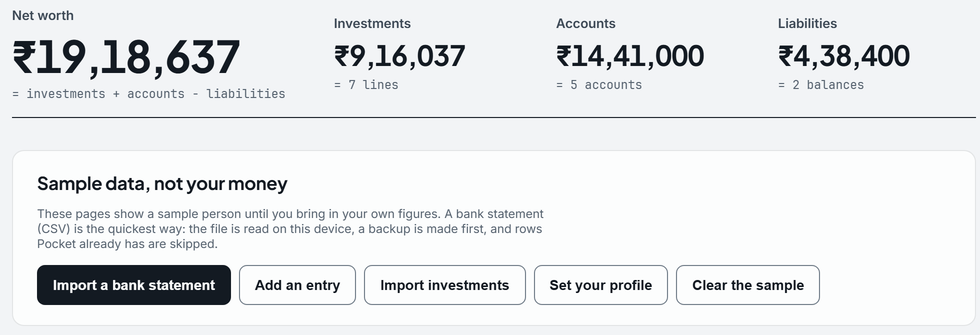
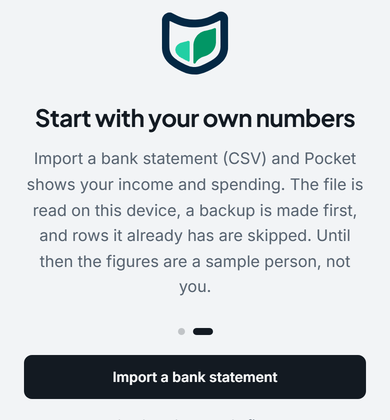

Pocket, free, on your own device.
For salaried people in India. One install, no account. Your figures stay on your computer or phone, and nothing leaves unless you turn something on.
Windows, macOS, Linux and Android · Pocket 3.2.11 · What changed in 3.2.11
Windows and macOS ask you to confirm the first open, because the builds are not signed yet. Check the file's SHA-256 first.
SHA-256


Every platform
SHA-256 0cb574461375d1a18c18d693c1ef47cf539b1c16185d69b8c3eb9eea59574cdd
SHA-256 cb40506822c63644d0fb678e24a3a407af7e0bf0ab25cbed886312df35f2741a
SHA-256 91aca36dbaa72df99bb99a3ec4e004c45bc28d642704cdfa41c7b8e901106b1a
SHA-256 a7f85e160b5b196431107d1346e71209249011422f07aeec082062527a8913e8
Nothing installed? The portable zip.
Your first 5 minutes
In the order Pocket shows it. No account, nothing sent.
It opens on a sample person
Six months of a made-up person's money, labelled "Sample data, not your money" on every page.
Import a bank statement
The start card's first button. Choose your bank and its CSV; nothing is added until you say so.
Your first entry ends the sample
The sample shows only while Pocket holds nothing of yours.
Add your mutual funds
The CAS that CAMS or KFintech emails you, opened with its password (never stored), shown before anything is written.
Open a figure's working
Show working lists the entries, prices and dates behind a figure. The net worth guide walks through one.
Check the file, then install it
What changed in 3.2.11, or follow every release in the release feed (RSS).
About the warning. Windows and macOS warn about any app that is not signed and notarised by a registered publisher, and Pocket’s builds are not yet. The warning is about the signature, not about what the file does; the SHA-256 is how you check the file is the one this page lists.
On Windows
- In PowerShell, in the folder you saved it to:
Get-FileHash .\Pocket_*_windows_setup.exeIt prints the SHA-256 listed for Windows. - Open the file. If Windows says “Windows protected your PC”, choose More info, then Run anyway.
On a Mac
- In Terminal, in your Downloads folder:
shasum -a 256 Pocket_*_macos.dmgIt prints the SHA-256 listed for macOS. - The first open only. macOS 14 or earlier: Control-click Pocket in Applications, then Open. macOS 15: open it once, then System Settings, Privacy & Security, Open Anyway.
Verify: the size and SHA-256 of every file
- Version
- v3.2.11 · released 26 October 2026
- Windows
- Pocket_3.2.11_windows_setup.exe · 50 MB (installer) · Windows 10/11, 64-bit (x64)
SHA-2560cb574461375d1a18c18d693c1ef47cf539b1c16185d69b8c3eb9eea59574cdd - macOS
- Pocket_3.2.11_macos.dmg · 63 MB (disk image) · Apple silicon (M1 or later)
SHA-256cb40506822c63644d0fb678e24a3a407af7e0bf0ab25cbed886312df35f2741a - Linux
- Pocket_3.2.11_linux_amd64.deb · 70 MB · 64-bit x86 (amd64)
SHA-25691aca36dbaa72df99bb99a3ec4e004c45bc28d642704cdfa41c7b8e901106b1a - Android
- Pocket_3.2.11_android.apk · 74 MB (APK) · Android 7.0 or later
SHA-256a7f85e160b5b196431107d1346e71209249011422f07aeec082062527a8913e8
- Not yet code-signed. Windows SmartScreen may warn on first run ("More info", then "Run anyway"); macOS asks once. Download only from this page and check the SHA-256.
- Update check, from 3.2.7. Check now, or once a day if you turn that on, asks mypocketfi.com for the latest version number and sends nothing about you. Off until you ask. See the Privacy Policy.
Install help: Windows, Mac, Linux and Android
- Download the installer from this page: no payment, no form, no account.
- Check it is the file this page describes: in PowerShell,
Get-FileHash .\Pocket_3.2.11_windows_setup.exeshould print the SHA-256 above. - Run it. It installs for you alone, with no administrator prompt, and opens Pocket in a window of its own. Your 14-day full trial starts on first run, then Free continues.
- Data lives in
%USERPROFILE%\FinOSData: back up that folder and you have everything. Uninstalling keeps it. - Each release is published here; its installer updates Pocket in place. Back up first.
On a Mac: drag Pocket to Applications. Not yet notarised, so macOS blocks the first open: on macOS 15 or later, click Done, then System Settings → Privacy & Security → Open Anyway; on macOS 14 or earlier, Control-click Pocket.app and choose Open. Data lives in ~/FinOSData.
On Linux: on Debian or Ubuntu, sudo apt install ./Pocket_3.2.11_linux_amd64.deb, then open Pocket from your applications menu; on another distribution, run the AppImage under Alternative downloads. Pocket runs in a terminal window: leave it open. Data lives in ~/FinOSData.
On an Android phone: open the APK; the first time, Android asks you to allow your browser to install apps. Data stays on the phone, encrypted, and Pocket asks for no internet access. To update, install the next APK over it.
Alternative downloads
The same Pocket, packaged another way, each with its size and SHA-256 once published.
- Windows portable zip
- Pocket_3.2.11_windows.zip · 67 MB · ~144 MB unpacked. The Windows build as a folder: unzip and run Pocket.exe. Nothing is installed.
SHA-2560c8a89d542ca7886440585f3a4283ae26229bbb18d2e667660fd3daac85f9408 - Linux AppImage
- Pocket_3.2.11_linux_x86_64.AppImage · 87 MB. One file for most 64-bit Linux distributions: make it executable and run it.
SHA-2563de6f23f745181affacc7fdbf7d6d3ffc05e2c6e782d23d26073f23ac51bfe1e - Linux tar.gz
- Pocket_3.2.11_linux.tar.gz · 94 MB · ~237 MB unpacked. The Linux build as a plain archive: extract it and run Pocket/Pocket.
SHA-256c7520063d49bd521bee987b70776db6b1377f00797f146b7bc502bf3a4c7f11a - Android APK
- Pocket_3.2.11_android.apk · 74 MB. The Android app as a file, without Google Play.
SHA-256a7f85e160b5b196431107d1346e71209249011422f07aeec082062527a8913e8
System requirements
Windows, macOS, Linux and Android today; the iPhone app's come with its App Store listing. Known limits are on the Changelog.
- Windows
- Windows 10/11 (64-bit, x64) · 4 GB RAM or more · ~250 MB free space
- macOS
- An Apple silicon Mac (M1 or later). Not yet notarised by Apple, so the first open needs one confirmation; GETTING_STARTED.txt in the disk image shows how.
- Linux
- 64-bit x86 (amd64) with glibc 2.38 or later (Ubuntu 24.04, Debian 13 or newer).
- Android
- Android 7.0 or later. The APK installs directly; Google Play is coming.
- iOS Coming to the App Store
- Requirements will be published at release.
Questions before you install?
The known issues, and support by email from the founder, are on the Support page.
Download free for Windows Choose your download